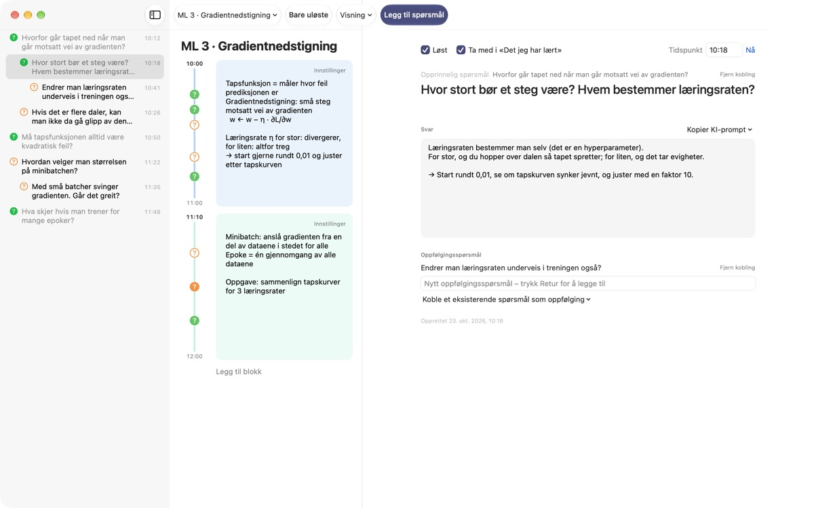
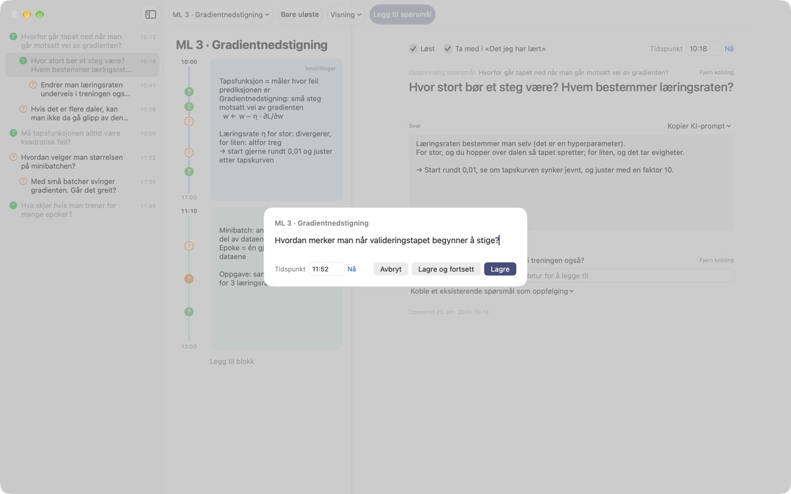
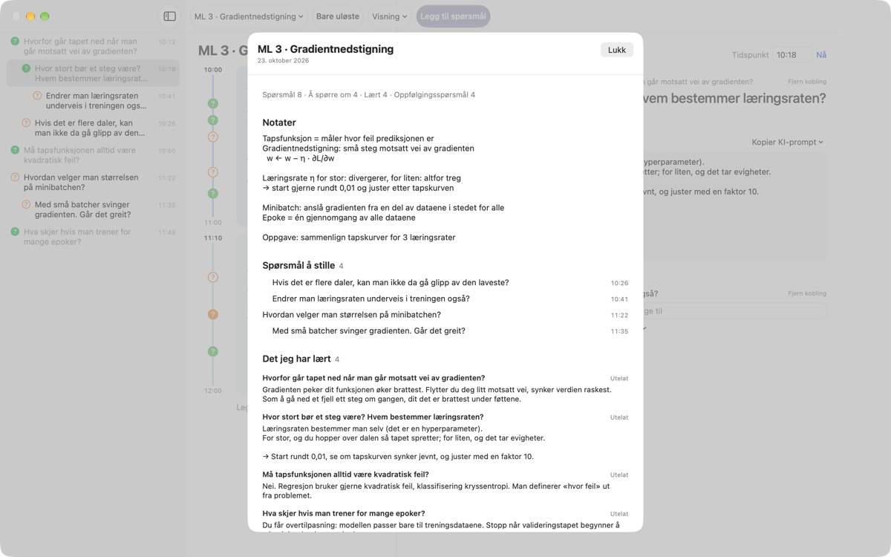
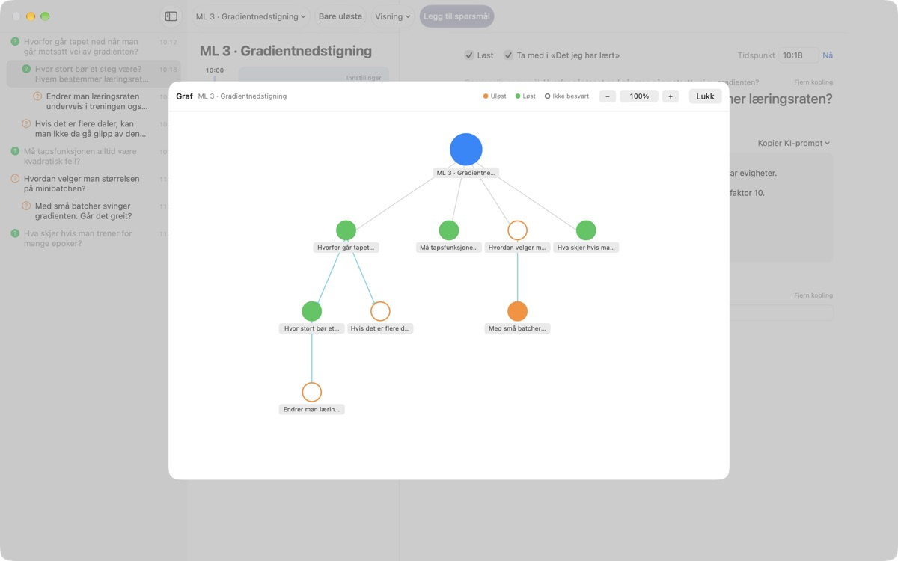

Ikke la et spørsmål fra
forelesningen gli forbi
Trykk ⌘⇧N, skriv én linje, så havner spørsmålet ved siden av notatene dine fra akkurat det minuttet. Du hører videre og finner svaret senere.
For macOS 14 eller nyere. Ingen konto, alt blir på denne Macen.

Prøv her
Du sitter midt i en forelesning om maskinlæring. Skriv et spørsmål og lagre det, så dukker det opp et ? ved blokken for det klokkeslettet. Velg et tidspunkt utenfor blokkene, så lages det en ny blokk til det.
Husker du spørsmålet når forelesningen er over?
Akkurat når du tenker «vent, hvorfor det?», har foreleseren gått videre. Spørsmålstegnet i margen husker ikke hvilken forklaring det hørte til, og spørsmålet blir aldri besvart. LectureQ fester hvert spørsmål til notatene dine fra det øyeblikket og holder det fremme til du har funnet ut av det.
Spør uten å miste neste setning
Åpne inntastingsvinduet med Legg til spørsmål i verktøylinjen eller ⌘⇧N. Tidspunktet fylles inn av seg selv. Retur lagrer, og ⌘Retur lagrer og gjør deg klar for det neste.
Hvert spørsmål vises som et ? ved tidsblokken det hører til, så du senere ser med en gang hvilken del av forelesningen det kom fra.

Besvarte spørsmål blir det du har lært
Skriv svaret med egne ord, merk spørsmålet som løst, så havner det under Det jeg har lært i oppsummeringen. Det som fortsatt er åpent, blir liggende under Spørsmål å stille, og lista til neste gang lager seg selv.Kopier KI-prompt i spørsmålsdetaljene legger en ferdig prompt på utklippstavlen med navnet på forelesningen og notatene dine fra det øyeblikket. Lim den inn i KI-tjenesten du allerede bruker.

Se hvor tankene tok veien
Oppfølgingsspørsmål legger seg med innrykk under spørsmålet de kom fra, og grafen kobler dem sammen med piler. Klikk på en node for å hoppe rett til spørsmålet.
Under Læringsstatus skriver du hvor du står nå, hvor du vil være når kurset er over, og hva du vil lære, og sammenligner.

Tre steg for å komme i gang
- 1
Opprett en forelesning
Fra forelesningsmenyen til venstre i verktøylinjen, eller importer en samtale lagret som Markdown.
- 2
Skriv det ned med en gang
Trykk
⌘⇧N. Én linje holder, og tidspunktet står der allerede. - 3
Svar senere
Skriv svaret, og klikk på ? for å merke det som løst. Det flytter til Det jeg har lært.
Hurtigtaster
- ⌘⇧N
- Legg til spørsmål
- Return
- Lagre
- ⌘Return
- Lagre og skriv det neste
- Esc
- Avbryt
- ⌘1
- Oppsummering: spørsmål å stille, det du har lært, notater
- ⌘2
- Graf: opprinnelige spørsmål og oppfølgingsspørsmål
- ⌘3
- Tidsblokker: alle forelesningenes blokker i tidsrekkefølge
- ⌘4
- Læringsstatus
- ⌘+ · ⌘- · ⌘0
- Større tekst, mindre tekst, standardstørrelse
Alle finnes også i Visning-menyen.
Alle funksjoner er gratis
Gratis
- Raske spørsmål og notater per tidsblokk
- Oppfølgingsspørsmål og graf
- Oppsummering, tidsblokkoversikt og Læringsstatus
- KI-prompter i fem steg, kopiert til utklippstavlen
- Import av samtaler fra Markdown
Støtt utvikleren
- Send et lite tips fra Innstillinger hvis appen hjelper deg
- Et tips låser ikke opp noe ekstra
Alt fungerer likt, med eller uten tips.
Ingen reklame, ingen konto. Notatene dine blir på denne Macen.
Vanlige spørsmål
Hva betyr fargene på ?
I lista er en tom oransje sirkel et spørsmål som ikke er løst ennå, og en fylt grønn et løst spørsmål. Klikk på ? for å bytte, og slå på Bare uløste i verktøylinjen for å se bare de åpne. Ved en tidsblokk viser fargen om spørsmålet er løst, og en fylt sirkel at det står et svar.
Hvordan fungerer tidsblokker?
Med Legg til blokk starter en ny blokk i det øyeblikket, og den forrige slutter der. Skriver du et spørsmål på et tidspunkt ingen blokk dekker, lages det en blokk rundt det. Med Innstillinger øverst til høyre i blokken endrer du farge, starttid og lengde, eller sletter den. Sletter du selv en blokk, slutter den forelesningen å lage blokker automatisk.
Hva er forskjellen på Løst og Det jeg har lært?
Når du huker av Løst i spørsmålsdetaljene, velger du også om spørsmålet skal telle i Det jeg har lært. Der vises bare løste spørsmål du har tatt med. Du kan også fjerne eller legge dem til igjen fra oppsummeringen, og svaret blir stående.
Hvordan fungerer KI-promptene?
Åpne Kopier KI-prompt ved Svar i spørsmålsdetaljene og velg et steg: Puss spørsmålet, Finn svaret, Utfordre svaret, Hent ut oppfølgingsspørsmål eller Få svaret mitt vurdert. En prompt med navnet på forelesningen, notatene dine fra det øyeblikket, læringsstatusen din og det opprinnelige spørsmålet kopieres til utklippstavlen. Selve prompteksten er foreløpig på koreansk; de fleste KI-tjenester forstår den likevel, og du kan be om svar på norsk. For å få svaret ditt vurdert må du først ha skrevet det selv. Appen kobler seg aldri til en KI-tjeneste på egen hånd.
Kan jeg importere en samtale lagret som Markdown?
Velg Importer fra Markdown … i forelesningsmenyen. # Tittel blir navnet på forelesningen, og i hver ## Seksjon er det første spørsmålet det opprinnelige og de neste oppfølgingsspørsmål. Det den første som snakker i fila sier, blir spørsmål, og det andre sier, blir svaret på spørsmålet før. Originalfila endres aldri.
Hvordan sletter jeg et spørsmål eller en forelesning?
Høyreklikk på spørsmålet i lista og velg Slett. For en forelesning bruker du Slett gjeldende forelesning i forelesningsmenyen; spørsmålene og blokkene følger med. Det kan ikke angres, så ta sikkerhetskopi av det viktige først.
Hvor lagres dataene mine, og hvordan tar jeg sikkerhetskopi?
Alt blir på denne Macen og lastes aldri opp. Avslutt appen og kopier hele mappen ~/Library/Containers/com.lectureq.LectureQ/Data/Library/Application Support/LectureQ/ med filene -wal og -shm. Appen sender bare anonym bruksstatistikk, som versjon og hvilke dager den er åpnet, aldri det du skriver.
Teksten er for liten.
⌘+ gjør den større, ⌘- mindre, og ⌘0 tilbakestiller. Det går fra 85 % til 200 %, og innstillingen huskes.
Hvilke Macer fungerer appen på?
Alle Macer med macOS 14 eller nyere. Kildekoden er åpen på GitHub under M1zz/LectureQ.
Noe fungerer ikke. Hvem sier jeg fra til?
Send tilbakemelding fra appens Innstillinger (⌘,), eller skriv til adressen nedenfor. Fortell hvilken macOS-versjon du har og hva du holdt på med, så kan vi se på det raskere.
Spørsmål eller tilbakemeldinger? Skriv til mizzking75@gmail.com.